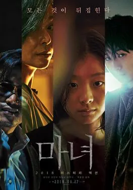

The genetics
Genetic engineering is at the heart of the story. Dr. Baek's laboratory created children genetically modified to have telekinesis and superhuman strength and speed, and the modification has a cost: the engineered humans suffer a fatal brain condition and depend on a regular serum, which keeps them tied to their makers. The lab's leaders hunt down the escaped Ja-yoon and treat their creations as property or, in Mr. Choi's words, monsters, while the engineered young people they deploy are dangerous killers. Critics read the film as a story about irresponsible transhumanist experimentation, and the creators are destroyed by their most successful creation. The film ends with Ja-yoon still dependent on the serum and seeking a permanent cure, setting up a sequel. The science is fantastical: genetic modification grants psychic powers.
How genetics is portrayed
- Overall portrayal of genetics
- negative Genetic enhancement is irresponsible, secretive experimentation on children that creates dependent weapons and ends in carnage; the heroine survives in spite of it, not because the science is shown as good.
- Outcome of the genetic intervention
- negative The modification produced superhuman killers, a massacre at the lab and a fatal dependence on serum for the engineered children; the serum also slows Ja-yoon's mother's dementia, but this is a minor counterpoint.
- Dr. Baek and the laboratory
- villain Aim: not stated (not applicable). Dr. Baek created Ja-yoon and other super-powered children by genetic modification, keeps them dependent on a serum and sends armed men and modified agents to recapture her, threatening her family; the film presents the lab as the antagonist and its leaders die at the hands of their creation. The sources do not say what the programme was for.
The story
A young girl escapes from a secret laboratory after a massacre, and its heads, Dr. Baek and Mr. Choi, assume she is dead. She is found on a farm by the Goo couple, who adopt her. Ten years later, Ja-yoon is a model student in rural Korea who seems to remember nothing, suffers severe headaches and helps her struggling family, whose mother has early dementia. To win prize money she enters a televised singing contest and makes a microphone float as a 'magic trick', alerting the lab. Armed men attack her home; she kills them with superhuman strength, then goes with the mysterious Nobleman to save her family. At the lab, Dr. Baek reveals she genetically engineered Ja-yoon and that her headaches are a fatal condition held off only by a serum. Ja-yoon then reveals that she has always remembered and exposed herself on purpose to obtain the serum. Restored, she kills her captors, burns the lab, brings serum to her family and seeks out Dr. Baek's twin sister for a lasting cure.